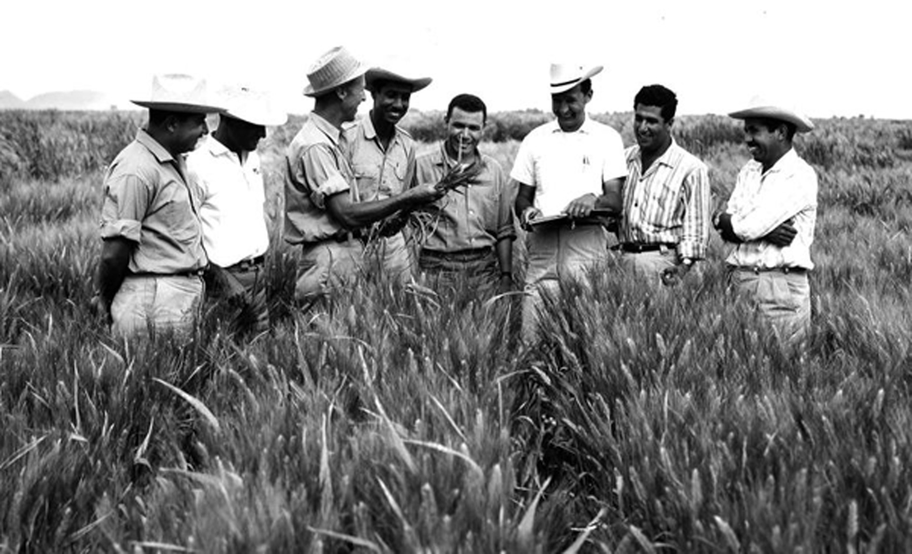

Dr.Norman Borlaug, third from the left, trains biologists in mexico on how to increase wheat yields - part of his life-long war on hunger
Here's a time line of DR.Borlaug's life:
1914 - Born in Cresco, lowa
1933 - Leaves his family's farm to attend the university of Minnesota, thanks to a Depression era program known as the "National Youth Administration"
1935 - Has to stop school and save up more money. Works in the civilian Conservation Corps, helping starving Americans. "Ii saw how food changed them", "he said. "All of this left scars on me."
1937 - Finishes university and takes a job in the US Forestry Service
1938 - Marries wife of 69 years Margret Gibson. Gets laid off due to bue to budget cuts. Inspired by Elvin Charles Stakman, he retuns to school study under Stakman, who teaches him about breeding pest-resistent plants.
1941 - Tries to enroll in the military after the Pearl Harbor attack, but is rejected; Instead, the military asked is lab to work on waterproof glue, DDT to control malaria, disinfectants, and other applied science;
1942 - Receives aPh.D . in Genetics and Plant Pathology
1944 - Rejects a 100% salary increase from Dupont, leaves behind his pregnant wife , and flies to Mexico to head a new plant pathology program; Over the next 16 years, his team breeds 6,000 different strains of disease resistent wheat - including diffrerent varieties for each majpor climate on Earth.
1945 - Discovers away to grown wheat twice each season, doubling wheat yields
1953 - crosses a short, sturdy dwarf breed of wheat